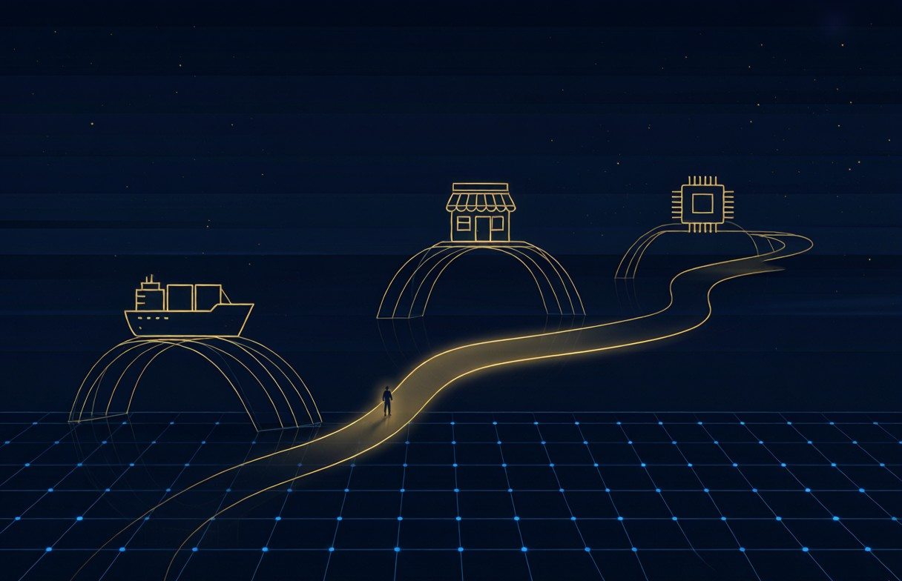

青年企業家的跨界思維
跨界的本質很多人以為跨界是「什麼都做」，其實真正的跨界是底層能力的遷移。無論是食品、科技還是文化，核心能力都是： 資源整合 趨勢判斷 團隊領導 執行落地 我的三次跨界 第一次：從貿易到電商2002年進入直播與電商行業，本…

跨界的本質
很多人以為跨界是「什麼都做」，其實真正的跨界是底層能力的遷移。無論是食品、科技還是文化，核心能力都是：
- 資源整合
- 趨勢判斷
- 團隊領導
- 執行落地
我的三次跨界
第一次：從貿易到電商
2002年進入直播與電商行業，本質是把傳統貿易的「人貨場」搬到線上。
第二次：從電商到實體
2013年加入東望洋集團，把電商的數據思維帶到實體零售。
第三次：從實體到數字
2025年創立龍遊集團，用AI技術賦能傳統產業出海。
給青年的建議
不要害怕跨界，但要確保每次跨界都有「可遷移的核心能力」作為支撐。選擇比努力重要，方向對了就不怕路遠。